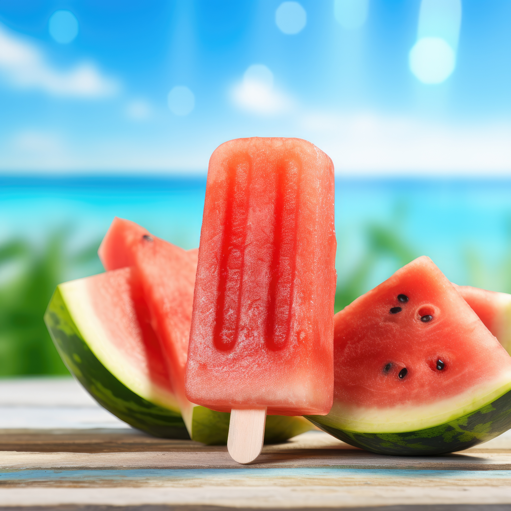
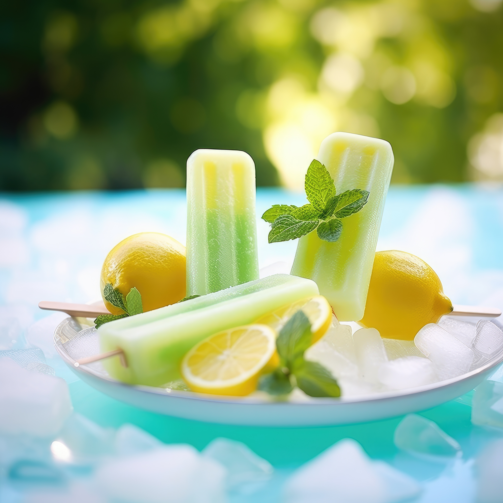
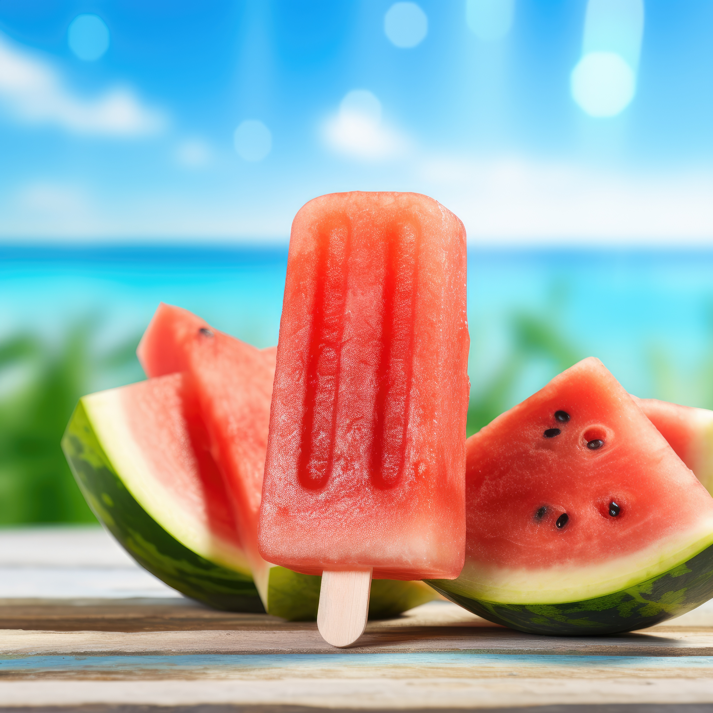
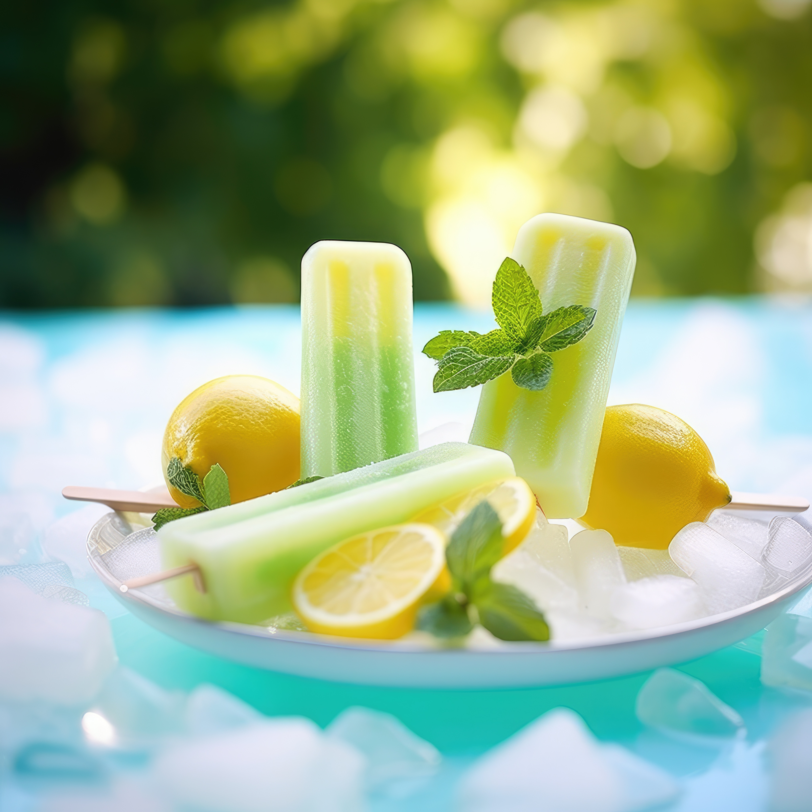

Лето — это свет и смех,
Это день за днем, как век,
Не кончается, не знает,
Словно радуга, играет.
Это поле, это лес,
Тысяча коротких чудес.
И поляна, и цветок,
Желтый, красный лепесток.
Это солнца жаркий луч,
И над морем светлый туч,
Что плывет, плывет лениво,
В небе синем, очень дивно.
Лето — это шелк травы,
Паутинки-кружева.
Это в воздухе — жара,
А в лесу — густая тьма.
Это елей сладкий хвойный
Запах, яркий и привольный.
Это запах земляники,
Малины, смородины, блики
Солнца в каплях росы,
Реки быстрые часы.
Это луг, где стрекоза,
Небо, что глядит в глаза.
Лето — это светлячки,
Ночи тихие, звонки.
Это шелест листвы,
Ветерок, что несёт мечты.
Это жаворонок в небе,
Утренний росистый хлеб.
Лето — это капли света
В тень листвы и в даль рассвета.
Это грохот летних гроз,
И молчанье перед грозью.
Это радуга-дуга,
Небо, что совсем нага.
Это гулким шепотом
Реки быстрой, шелестом
Листвы, что на верхушках,
И в вечерних тихих пушках.
Это запах полевых
Трав, и песен золотых.
Это время без забот,
И на всех один народ —
Ребятишки, что бегут,
Счастье на лугу найдут.
Это звонкий смех детей,
И нет лучше этих дней.
Это ночь, где звезд сиянье,
Летний день, как мирозданье.
Это песня для души,
И в закате все спеши
Успеть увидеть, что над нами
Расцветает над полями.


 


